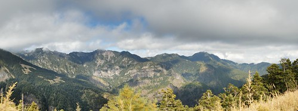

百岳﹖﹖ 你有聽過吧!! 不過…有沒有爬過就不一定了吧…

百岳們…我來了…..
大家一定奇怪, 為什麼徹爸會突然要拋家棄子地離開家兩天而跑去爬山勒??
原因在於徹爸有個同事有去爬過幾次山, 每次都聽他說的很不錯的樣子…
於是就跟徹媽商量一下是否可以去爬山…
而我們家那英明耐操的徹媽聽到我想去爬山…
很興奮地說…好呀, 不過下次你要帶我去毆…
帶徹媽去當然ok摟…
就這樣…跟同事一起研究要去爬哪座山…
找了一下…這個好像不錯…雪山主東峰…
才走2天, 爾且走的時間很短…

第一天晚上走2公里,
第二天走5.1公里, 爾且下午就到了…
第三天14公里…不過有10公里都是下坡…
看起來…”應該”算是入門級的…OK…就這個吧…
懷抱著興奮的心情…買了許多登山用品…等待爬山那天的到來…
-———————————————————————————
終於到了 12/12, 當天下午請了半天假, 先去保養車子…
急急忙忙回家…買了些麵包當上山備用糧食…
洗完澡, 就出發往古亭站集合了…

導遊拿著名單點點名…怪怪..女生還不少勒
(後來才知道, 我們這一團有3個是單獨報名的女生,
在這裡真是要致上最敬禮, 妳們真是…蠻猛的…)
右邊紅外套的那位仁兄就是我同事…目前未婚…

今天的月亮也特別漂亮…

坐了4個小時的車子, 終於到武陵農場的登山口了…我同事一臉剛睡醒的樣子…

這是登山口的小屋…大家上完廁所…就要正式..出發摟…

這是我的”完整”裝扮…
今天晚上要先走2km到達今天要睡的地方…七卡山莊…
不過…真正走時, 我才發現…不妙了…挖勒, 怎麼都是上坡??
不會吧…再來的路都是這樣呀!!!
很不幸的, 真的被我猜中了
接下來的2天裡…大部分的路都是上坡
(網路上大家都沒說這麼陡呀…有多陡, 看下去就知道…)
最後終於靠著意志力…撐到了七卡山莊….
也不管什麼了…倒頭就睡了…
不過清晨時, 就被冷醒了…感覺真像在當兵時的感覺…
睡著大通舖…蓋著薄薄的棉被…想著茫茫未知的今天…
-————————————————————————————
清早起來…仔細瞧瞧這個傳說中的七卡山莊…
比想像中的乾淨…走來走去, 別有一番感覺…

這是廚房, 跟走道的部分…如果要我在這邊呆一天…應該也是ok吧…

今天的天氣好像還不錯, 導遊說…看樣子天氣會很好…

還是照張到此一遊照吧…

這就是昨天走上來的階梯…
我偷偷問導遊…今天要走的有比昨天陡嗎??
導遊也是老經驗…笑笑跟我說…陡一點點爾以…
很好, 那就是表示陡很多了….

這是七卡的旁邊…維持的算不錯了…

耶…哎呀, 還真像猩猩勒…

七卡前的地圖,
導遊說其實台灣的登山步道都維持的不錯…
只要不要亂亂跑…都是蠻安全的…

我的帽子真的買錯了…帶起來真是..不太好看….

這就是我們睡的大通舖…

山青-小幸…幫我們準備熱呼呼的早餐…辛苦了…

廚房是用木頭搭建的…好像不太牢固的樣子…

用4個小爐子一起煮稀飯…

這就是我們的早餐了….

碗買太大了, 幸好有帶另一個小的…

哇…天氣真的不錯…

爬雪山有證書可以申請…
好像只要寄照片跟個人資料過去就好了..
-———————————————————————————-
吃完早餐要開始出發摟…
好吧…就看你路有多陡…..

看著天空…光線透進森林的感覺…真好…

這邊海拔比較高…好像楓葉就比較少了…
不過還是有零星幾顆楓葉…
上個月來武陵時, 楓葉蠻美的…
(請見 武陵賓館篇 http://blog.yam.com/hmchen1975/article/18480783
桃山瀑布步道篇 http://blog.yam.com/hmchen1975/article/18481351
農場篇 http://blog.yam.com/hmchen1975/article/18481064 )

有沒有感覺我的笑容是擠出來的…
真的佩服有的人可以一邊聊天, 一邊拍照, 還可以跟上團隊的速度…

至於路有多陡…有圖有真相…

幸好我同事體力還不錯…他幫我拍了不少照…
我已經氣喘虛虛了…根本不想照相了…

一路上都有路牌介紹有名的樹種…
這個絲絲的東西…好像是跟樹木共生的植物…
太喘了, 沒注意看植物名字…

整顆樹都長滿了一絲絲的鬚鬚…

又是上坡…哇勒…

不過休息時, 看著遠方…心情還是不錯的…

路都碎了…大家還是奮力爬…

到高點時, 導遊會讓我們休息…看看風景…
其實上坡時, 都是沒時間欣賞風景…
只有像這種休息時, 才有時間欣賞…

我已經臉色蒼白了…爾且…我大腿已經抽筋了…
糗了…才走1公里多耶…再來的每一步都是煎熬….

遠眺武陵農場…原來武陵是長這樣呀…

厚….又是上坡….加油呀…


有沒有看到右下方的步道…那邊就是傳說中的哭坡…
為什麼叫哭坡…應該不難想像吧…真的太哭了…

上哭坡前有個亭子…在這邊有個大休息…
再來就要上哭坡了…

順便也讓我抽筋的大腿休息一下….但是, 我忘了按摩了….
休息太久…一站起來, 哇靠….打球抽筋也沒這麼痛吧…
(回到台北, 回想這幾天頭腦中最常出現的畫面…
居然是…火影忍者被打的亂七八糟時, 居然還能站起來的畫面…
雪山….我跟你拼了….)

亭子前的風景真的不錯…
要我坐一個下午…應該也不難吧(尤其腳抽筋了)….

酷吧…這就是哭坡…拼了吧…

忍著雙腿的抽痛…終於…終於…上去了…
有看到左邊的亭子吧…就是剛剛休息的地方…

哇…真是心曠神怡….但是…
今天的路程才走一半耶….

又是硬擠出來的微笑…

這個路…真是太讚了…

我同事的體力真的不錯…一直幫我照相…

爬上又爬下的..
我已經掉到最後的集團了…
領先集團已經在”對岸”了

還有人跟我揮手勒…好啦, 我會加油的…

厚…就是這樣爬下又爬上啦…
壯闊的風景…只能解暫時的疲勞…

笑容再也擠不出來了…

來這邊不就是為了看這壯闊的風景嗎﹖﹖

一定撐得到的….

東峰…東峰…終於到了….
真是…有點爽的感覺….

這是全部團員的合照….

建男(忘了介紹我同事的名字)一直要幫我照相…
他說…來了不照太可惜了…幸好他的積極, 我才能有這麼多照片…

左邊的小房子就是今天晚上要住的…369山莊…快到了…

這是這次的導遊之一…山鼠大哥…

369看起來很近…但是..也還要2km….

大家休息一下…呆會又要出發摟..

真是…美麗的風景..


這就是傳說中的停機坪…

遠遠看起很小..近近看很大…

大家體力真的不錯…我真的下次要先訓練一下了…


變幻莫測的白雲…


快到369了…也看到一點點的積雪了…

到了…終於….

到了…….

這是比較清楚的地圖照片..現在海拔已經有3100m了…

聽說這是新蓋的廁所…蠻不錯的…不過我只有小過便…

眼睛都快閉上了..

好想就趴在這邊睡一下…

一到山莊…大家就各自休息…到了5點才吃晚餐….

到了傍晚. 雲海圍繞在山莊旁了…
可惜出來吃飯時, 忘了帶相機…吃完飯已經天黑了….
照片沒拍幾張….

溫度才3度…

真的很冷….吃完飯早早就休息了…
明天就是重頭戲….攻雪山主峰了…
凌晨1點就要起床了…
導遊說…如果下雪就不去攻雪山了…
我心理想…我好希望下雪…不用攻雪山, 還可以玩雪…
這不是很爽嗎﹖﹖
(爾且還可以跟人家說…
不是我不攻, 是導遊不帶我去… 哈哈哈…)